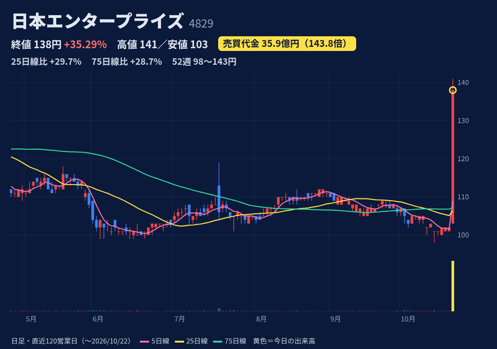
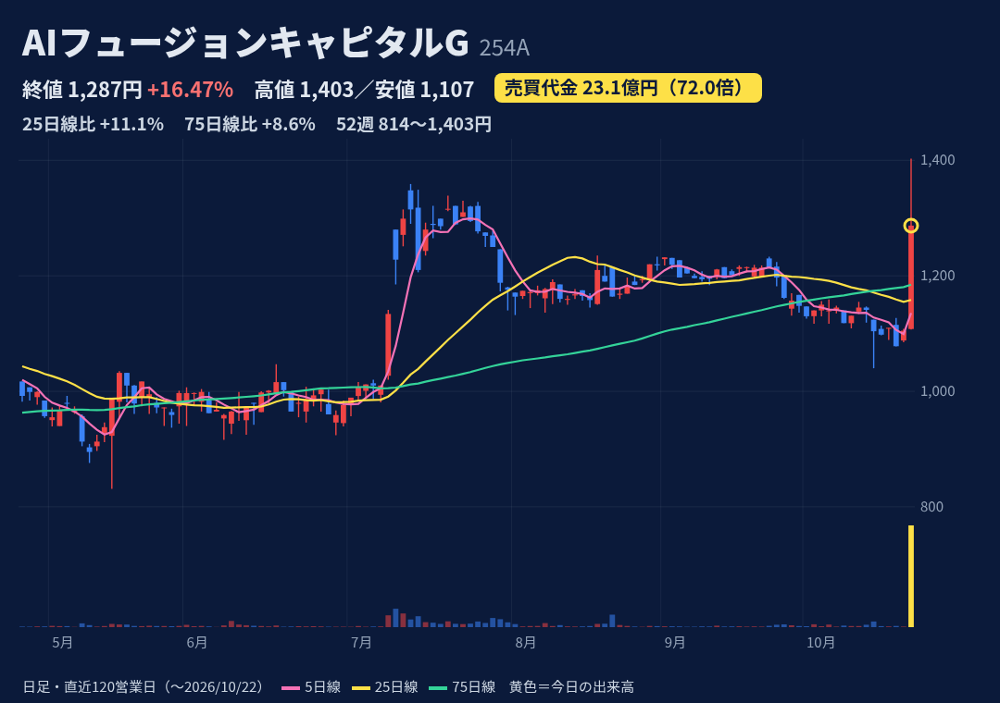
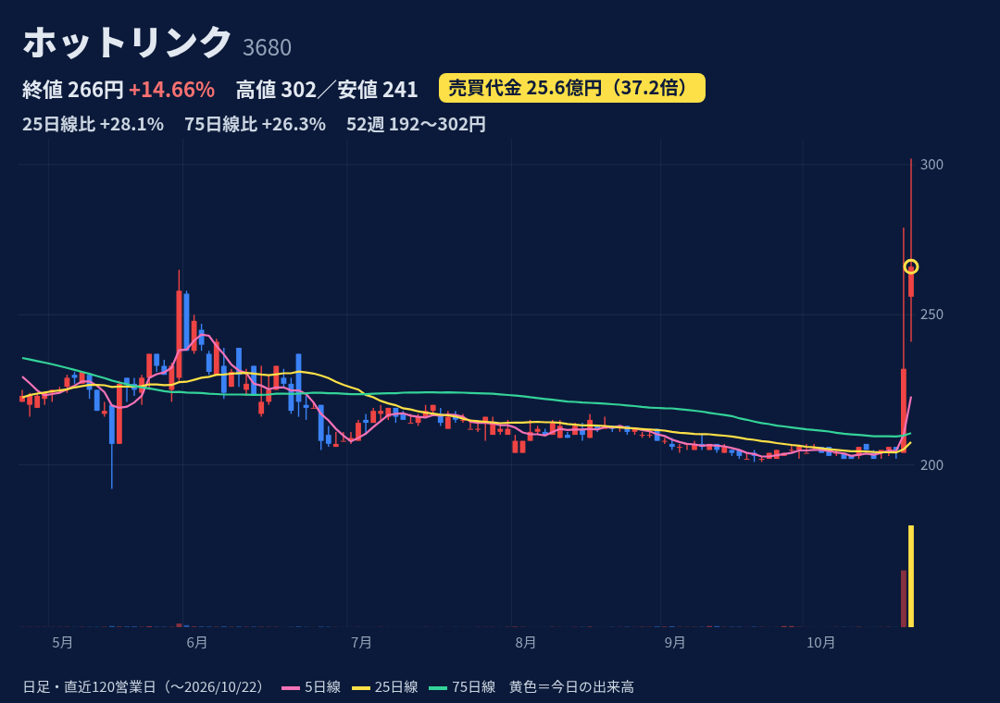
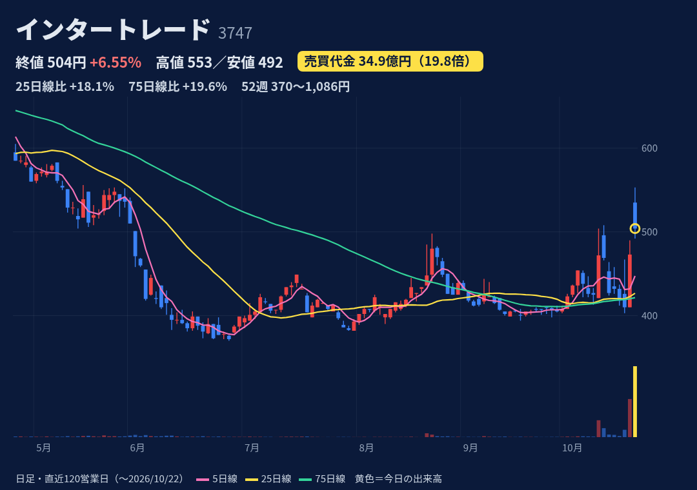
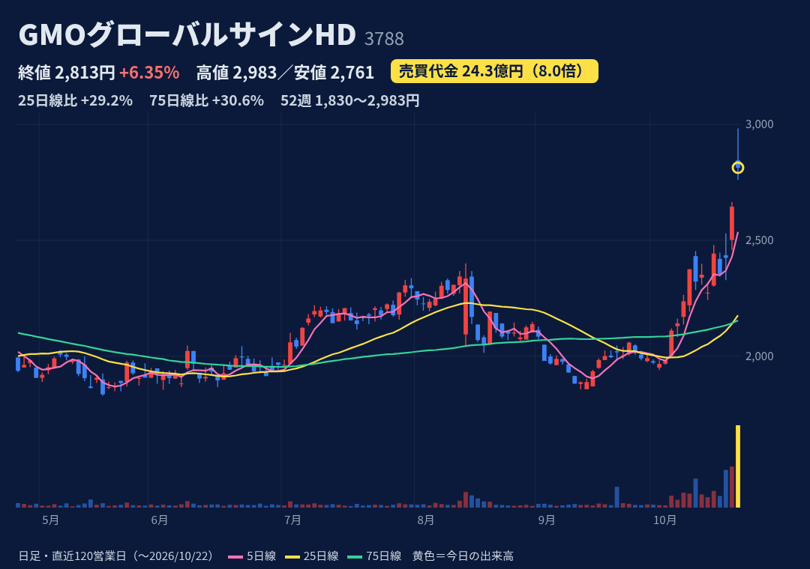
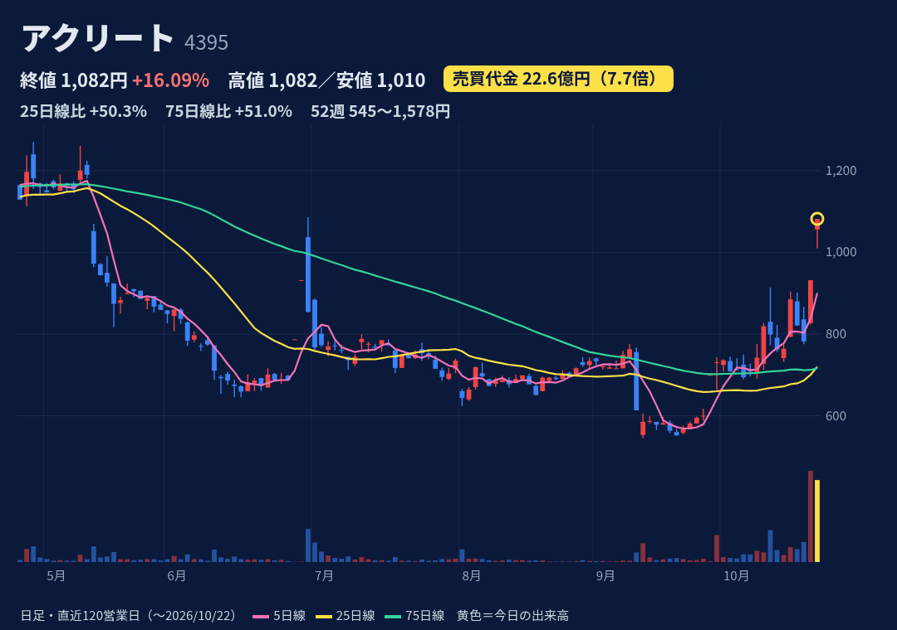

法人のIT端末キッティング支援などLCM事業が主力。スマホ向けコンテンツ・ソリューションも。
10/21 17:30開示：物流のハニー・ビー（売上29億円）を全株取得し10/22付で子会社化、取得価額1円。業績影響は精査中。株探・フィスコが急伸理由として報道。
1Q(6-8月)売上9.9億(前年比-8%)、営業赤字0.40億(前年0.11億の赤字)。通期予想 売上48.2億・営業益1.05億。2Q決算日は未確認。
始値103→高値141→終値138。上ヒゲ3円で高値圏引け。52週高値143円(2/13)に接近。25日線106・75日線107を約3割上回る。過去1年で売買代金5倍超は3回だけ、+12%超は今日が初めて。
10/21時点 買残85.6万株・売残9.5万株(倍率9.0倍)。今日の出来高2,799万株。JPXの10/21更新分では日々公表・増担保とも対象外。10/22分は未確認。
株価100円台の低位株。普段の売買代金は1日0.2億程度と薄い。買収先は2期連続で最終赤字、純資産1.7億円。1円取得の中身と業績影響は今後の開示待ち。監査役逝去で一時監査役を選任。

独立系VC・地銀連携の投資事業が祖業。M&Aでタメニー等を子会社化し事業が拡大中。上場子会社ショーケース(3909)を持つ。
10/22 12:30開示：子会社ショーケースと提携し、地銀・信金の取引先企業向けに本人確認・認証サービスを販売。業績への影響は軽微。開示後に後場急伸(株探)。
前期(3月期)は営業赤字13.9億。1Q(4-6月)売上28.8億(前年5.9億)・営業赤字3.2億。今期予想は売上130億・営業益10億と黒字転換の計画。2Q決算日は未確認。
始値1,108→高値1,403(52週高値)→終値1,287。上ヒゲ116円で高値から8%押し戻された。25日線1,158・75日線1,185を上抜け。7/8〜10にも売買代金が14〜16倍に増えて+12%急騰した例あり。
10/21時点 買残128.7万株(発行株式の約13%、普段の出来高の約46日分)・売残0。制度信用は買いのみ。JPXの10/21更新分では日々公表・増担保とも対象外。
自己資本比率は20.8%(1Q)と低め。財務制限条項付きの借入あり。買残が厚く、戻り売り圧力になりうる。今期の大幅黒字予想は達成が不透明。10/13に保有ビットコインの売却を開示。

SNSデータ分析・SNS運用代行などのマーケ支援が本業。子会社Nonagon CapitalでDeFi・ステーブルコイン運用などWeb3事業も。
今日の個別材料は確認できず。株探は「仮想通貨関連」として物色と分類。10/16にスタンダード市場への区分変更承認(10/23付)を開示済み。BTC反発(10/21)との連想は推測。
上期(1-6月)売上19.2億(前年比+11%)・営業赤字0.22億(前年1.18億の赤字)。通期予想は売上40.7億・営業益1.04億の黒字。前期は減損で営業赤字18.3億。次回決算は11/13予定。
始値256→高値302(52週高値)→終値266。上ヒゲ36円で、高値から12%押し戻された。10/21も売買代金235倍・+13%で、2日連続の急増。25日線208を28%上回る。過去1年で+12%超の日は今回の2日だけ。
10/21時点 買残82.5万株・売残1.65万株(倍率50倍)。J-Quantsでは7/31以降、日証金の規制フラグが継続(内容は未確認)。JPXの日々公表・増担保は10/21時点で対象外。
低位の小型株。材料が確認できないまま2日で+30%(205→266円)上昇。上期は営業赤字で通期黒字予想は下期頼み。公式サイトが10/22時点で「メンテナンスのため一時停止」と表示(理由の記載なし)。

証券・FX会社向けの売買システムの開発・保守が主力。ヘルスケア(キノコ)事業も。持分法会社に暗号資産交換業者デジタルアセットマーケッツ。
会社の開示・個別報道は確認できず。株探は10/21・10/22とも一時S高の理由を「仮想通貨関連」と記載。持分会社のセキュリティ事業や暗号資産との連想は推測。
9月期3Q累計 売上13.4億(前年比+4%)、営業益0.22億(前年は0.13億の赤字)。8/7に通期予想を下方修正(営業益0.3億・純利益0.78億)。本決算は11/13予定。
始値535→一時S高553→終値504の陰線。高値から49円(9%)押し戻された。25日線427・75日線422は上回るが、200日線525は下回る。25年10月・26年1月のS高後は、10日で-18〜20%下げた経緯がある。
10/21時点 買残103.6万株・売残46.7万株(倍率2.2倍)。前日比で買い・売りともに約26〜27万株増えた。7/31〜10/2は日証金の注意喚起の対象。JPXの日々公表・増担保は10/21時点で対象外。
過去1年で売買代金5倍超が11回、S高(一時含む)7日と急騰→失速を繰り返す銘柄。持分法の投資損失が繰り返し発生。本業の利益は小さい。今日はS高から崩れた形。

電子認証(SSL証明書)、電子契約「GMOサイン」、ID管理「トラスト・ログイン」、ホスティングが柱。GMOインターネットグループ傘下。
フィスコはPHP脆弱性を受けたセキュリティ株物色の一角として上値追いと記載。10/19に純利益予想を上方修正(10.5→13.1億、子会社株売却益)、配当59.67→74.35円。AI連携の新サービス発表も続く。
上期(1-6月)売上110.9億(前年比+12%)、営業益5.85億(前年比-1%)。通期営業益予想16.2億は据え置きで、上期の進捗は36%。純利益の上振れは一時的な売却益による。次回決算は11/12予定。
始値2,845→高値2,983(52週高値)→終値2,813の陰線。上ヒゲ138円。10/15の2,274円から5営業日で+24%。25日線2,177・75日線2,154を約3割上回る。過去1年で+12%超の日は1回のみ。
10/21時点 買残19.0万株・売残9.9万株(倍率1.9倍)。売残は10/14の5.9万株から増加。JPXの日々公表・増担保は10/21時点で対象外。
純利益上方修正の中身は一時的な売却益で、営業益予想は据え置き。上期の営業利益は前年並み。25日線からの乖離が約30%と大きい。予想PERは約25倍(J-Quants)。今日は上ヒゲの陰線。

企業から個人へのSMS(ショートメッセージ)配信代行が主力。本人確認・認証の用途が拡大。GPU・データセンター関連の新事業も。
今日の個別材料は確認できず。株探のS高一覧で2日連続「情報セキュリティ関連」(PHP脆弱性を受けたセキュリティ株物色の一角)。引け後17:00に再発防止策と役員報酬減額を開示。
2Q決算は延期中。1Q(1-3月)売上21.7億(前年比+11%)・営業益0.82億(前年1.08億)。通期予想は売上95.9億・営業益6.56億。半期報告書は11/13までに提出予定(訂正を含む)。
2日連続S高引け(1,082円)・上ヒゲなし。9/10安値545円の約2倍。25日線720・75日線717を約50%上回る。52週高値1,578円(25/12)。過去1年S高(一時含む)9日。25/12・26/6のS高後は10日で-15〜27%。
10/21時点 買残86.2万株(発行株式の約11%)・売残2千株。制度信用は買いのみ。買残は前日比+11.8万株。JPXの日々公表・増担保は10/21時点で対象外。
GPU取引の会計処理で過去の財務諸表を訂正予定。特別調査委は「架空・循環取引ではない」と結論。一時会計監査人が対応中。決算延期中で業績の不透明感が大きい。値幅制限いっぱいの動きが続き、値が飛びやすい。
株価・出来高・信用残：取引所データ。材料：各社開示・株探・フィスコ・トレーダーズ等。